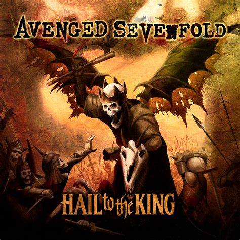

Avenged SevenFold Álbum HAIL TO THR KING
Inicialmente, a banda tocava metalcore, mas ao longo dos anos, https://fabio815.github.io/Pagina-de-musica/imagens/OIP.jpg eles evoluíram para um som mais diversificado, incorporando elementos de heavy metal, hard rock e metal progressivo1. Eles são conhecidos por suas performances energéticas e músicas como “Nightmare”, “Hail to the King” e “Bat Country”.
 Álbum
Álbum
